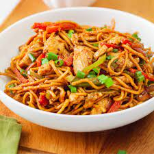

Chicken Noodles

Description:Chicken noodles is a popular indo chinese recipe made with chicken, noodles, vegetables, garlic tossed with sauces.
Ingridents
- 200 grams boneless chicken
- 1/4 tsp pepper powder
- 1/8 tsp of salt
- 1 tsp soya sauce
- 1/2 to 1 tsp five spice
- 150 grams Noodles
Steps
- Bring water to a boil, add salt and 1 tsp oil. Now add in noodles and cook till done. Drain and rinse in cold water. Set aside
- Heat oil in a pan, add eggs, season with salt and pepper and scramble. Set aside. Now add chicken, add ginger garlic paste, salt and mix well
- Add in carrot, cabbage, onions, bell pepper, along with salt and sugar and toss well. Add noodles and mix well
- Now add in all sauces, vinegar and mix well
- Stir fry on high heat for 5 to 7 mins.Add pepper and spring onion green. Mix well
- Serve